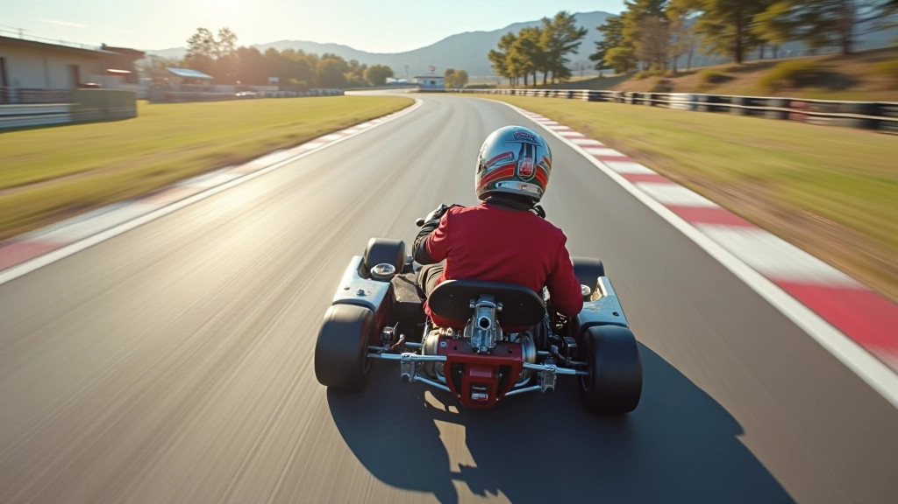
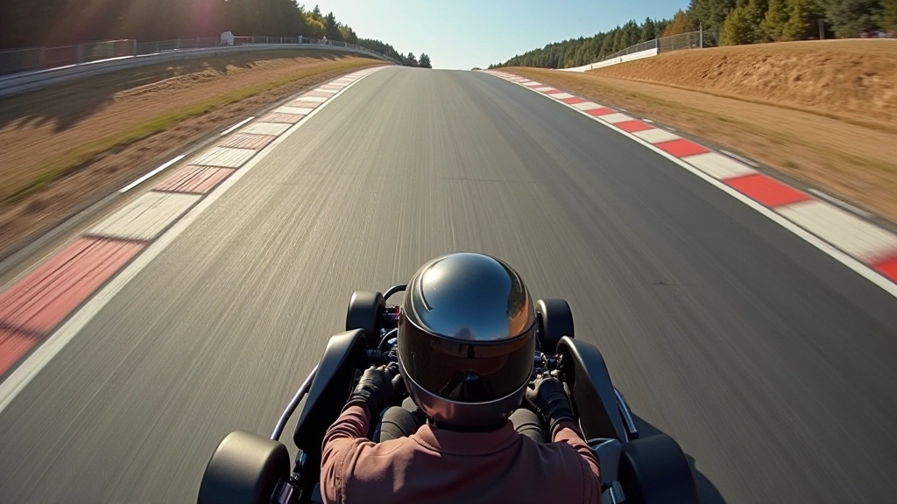

التحكم الدقيق بدواسة الوقود
اكتشف كيف يعدل السائقون المحترفون ضغطهم على دواسة الوقود في مراحل مختلفة من المنحنى.
اقرأ المزيدتعلم كيفية الخروج السليم من المنحنيات وتطبيق الدواسة بشكل تدريجي للحصول على أفضل النتائج والسرعة القصوى.


فريق التحرير والمراجعة
كتبه فريق تحرير ألفا درايفر، متخصص في تقديم إرشادات عملية وسهلة الفهم حول تقنيات الكارتينج.
الخروج من المنحنى هو أحد أهم المراحل في السباق. ليس فقط تحتاج إلى اجتياز المنحنى بسرعة آمنة، لكنك تحتاج أيضاً إلى الاستعداد للمرحلة التالية. السرعة التي تتركك بها المنحنى تؤثر بشكل مباشر على أداء الكارت في المستقيم الذي يتبعه.
الفرق بين سائق ماهر وآخر عادي يظهر بوضوح في كيفية إدارة دواسة الوقود عند الخروج. نحن هنا لنعلمك الطريقة الصحيحة.

التسريع ليس عملية مفاجئة. بل هو سلسلة من الخطوات المدروسة تبدأ من اللحظة التي تبدأ فيها بالخروج من المنحنى.
قبل أن تضغط على دواسة الوقود، يجب أن تتوقف تماماً عن الضغط على الفرامل. بعض السائقين المبتدئين يحاولون الضغط على الاثنتين معاً، وهذا خطأ كبير.
الخطوة الأولى هي أهم خطوة. اضغط على دواسة الوقود بنعومة وتدرج. الضغط المفاجئ قد يؤدي إلى فقدان السيطرة على الكارت.
بعد بداية ناعمة، زد الضغط على الدواسة بشكل منتظم. تحتاج إلى الوصول إلى الضغط الكامل بحلول الوقت الذي تصل فيه إلى المستقيم.
عندما تدخل المستقيم بالكامل، يجب أن تكون قد وصلت بالفعل إلى ضغط دواسة الوقود الكامل. هذا هو الوقت لاستخدام كل قوة الكارت.
التسريع الصحيح يتطلب ممارسة. لكن هناك بعض الأشياء التي يمكنك فعلها من الآن لتحسين تقنيتك.
لا تركز على الدواسة. انظر إلى المسار أمامك. يجب أن تعرف أين ستذهب قبل أن تصل إلى هناك.
الكارت يميل عند الضغط على الدواسة. تعلم كيفية موازنة وزن الكارت بحركات العجلة الصغيرة.
كل كارت مختلف قليلاً. التسريع في كارت قد يختلف عن الآخر. اضبط أسلوبك حسب استجابة الكارت.
التوتر يؤثر على أدائك. خذ نفساً عميقاً وثق بقدرتك. الممارسة تحول الخوف إلى ثقة.

حتى أفضل السائقين يرتكبون أخطاء. لكن بمعرفة هذه الأخطاء الشائعة، يمكنك تجنبها من البداية.
هذا هو الخطأ الأول الذي يرتكبه المبتدئون. الكارت لا يستطيع التعامل مع الضغط المفاجئ والكامل على الدواسة. ستفقد السيطرة وقد تصطدم.
إذا انتظرت طويلاً لبدء الضغط على الدواسة، فستخسر السرعة. يجب أن تبدأ التسريع بينما تخرج من المنحنى مباشرة، وليس بعده.
الخط الذي تختاره يؤثر على كيفية تسريعك. خط السباق الصحيح يسمح لك بالتسريع بشكل أسرع وأكثر أماناً.
المعلومات في هذا الدليل مقدمة بغرض تعليمي وتوجيهي. تقنيات السباق تختلف من سائق إلى آخر ومن كارت إلى آخر. ننصحك بالممارسة تحت إشراف مدرب مختص، خاصة إذا كنت مبتدئاً. السلامة دائماً هي الأولوية.
التسريع من المنحنى ليس سحراً. إنها مسألة ممارسة وفهم لكيفية يستجيب الكارت. ابدأ بنعومة، زد الضغط تدريجياً، وثق بنفسك. مع الوقت، ستجد أن هذه الحركات تصبح طبيعية تماماً.
تذكر: السائقون العظماء لم يصبحوا عظماء بالتعجل. لقد تعلموا بصبر وممارسة منتظمة. أنت أيضاً يمكنك أن تصبح أفضل.
تعمق أكثر في تقنيات التحكم في دواسة الوقود والسباق
اكتشف كيف يعدل السائقون المحترفون ضغطهم على دواسة الوقود في مراحل مختلفة من المنحنى.
اقرأ المزيد
تعلم كيفية اختيار أفضل خط سباق عند الاقتراب من المنحنى وكيفية تعديل موضعك لتحقيق أفضل أداء.
اقرأ المزيد
استخدم البيانات والتحليلات لقياس تقدمك وتحديد نقاط الضعف في تقنيتك عند الخروج من المنحنيات.
اقرأ المزيد